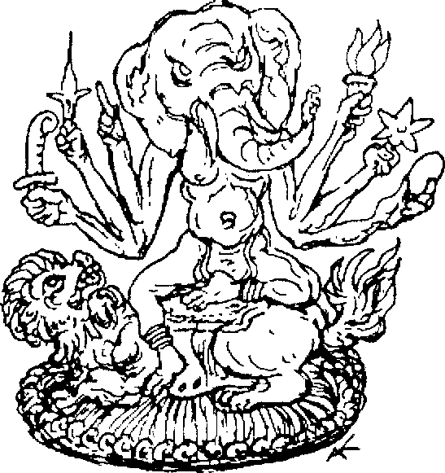

1
İncelikle işlenmiş, sivri, saman çatılar! Küçük bir köye gelmiştim. Tuhaf şekilli bodur ahşap kulübeler, küçük kubbeli binalar, silindir çadırlar vardı. Her ev bakımlı birer bahçeyle çevriliydi. Uzaktan bakıldığında, yerleşim bir etnografı sergisini andırıyordu. Üzerlerinde flamalar ve cam diskler olan direkler, taştan, tahtadan ve metalden yapılmış küçüklü büyüklü sayısız kaba heykelcik rastgele etrafa serpilmişti. Burası, büyük bir kısmı yaşlı ağaçların alçak dalları altında gizlenen küflü bir karmaşaydı.
Rüya Ülkesi’nin yerlileri burada yaşıyordu. Kendine has, huzurlu bir havası vardı. Tahta sunaklara yerleştirilmiş biçimsiz ve anlaşılmaz heykelcikler, çirkin ve tuhaf şekillerine rağmen kendilerini çevreleyen huzur dolu ortamla uyum içindeydiler. Birkaç insana rastlayana kadar etrafta dolaştım. Uzun boylu, sıska üç kişi bir tepeden aşağı inmekteydi.
Onları selamladığımda, kazınmış kafalarını ciddiyetle eğip yollarına devam ettiler. Moğol tipli, yaşlı adamlardı. Sarı turuncu arası soluk renkli cüppelere sarınmışlardı. Bir süre sonra başkalarını da gördüm. Kulübelerinin önünde heykel gibi hareketsiz, hiçbir şey yapmadan oturuyorlardı. Bir tanesinin önünde saksılar vardı, başka bir tanesi uyuyan bir köpeğe bakıyordu, bir üçüncüsü yerdeki çakılları izlemekle meşguldü. “Bu insanlar Pearl’de olsalar ayıplanırlar,” diye düşündüm. Buraya kimse uğramamıştı, eğer gelseydiler buradaki insanlara küçümsemeyle bakarlardı. Buna rağmen kabile çok gururluydu. Cengiz Han’ın kanından geldiklerine inanıyorlardı. Fakat, doğruyu söylemek gerekirse onlarda Asyalı hükümdarı hatırlatan hiçbir iz yoktu. Hepsi yaşlı insanlardı. Diğerlerinden zorlukla ayırt edilebilen birkaç kadın vardı. Hepsinin duruşları, giysileri ve yüz ifadeleri aynıydı. En güzel yerleri, hafif çekik gözlerinin nefis mavisiydi. Buradaki her şey Rüya Ülkesi’yle nasıl da tezat oluşturuyordu! Orada koşuşturma, burada sükûnet vardı. Ama bu insanlar da zamanında oldukça mücadele vermiş olmalıydılar, yüzlerindeki derin kırışıklar buna tanıklık ediyordu.
İlk ziyaretimden sonra köprünün öte yanındaki bu mavi gözlü kabilenin yanına sıklıkla gitmeye başladım. Kimse beni davet etmiyor, kimse beni köyden kovmuyordu. Şiddetli tezatın giderek daha fazla farkına vardım. Buraya rahatlamak ve sessizce gözlem yapmak için geliyordum. Sükûnetleri beni derinden etkilemişti. Bunu bol bol düşündüm ve elde etiğim sonuçları önceki tecrübelerimle birleştirmeye çalıştım.

Patera’nın büyük gizemi hakkında son altı aydır tamamen kör değildim. Yaşlı profesör bazı konularda haklıydı. Rüya Ülkesi’nin tamamı büyünün etkisindeydi; yaşamımızdaki korku ve varlığından şüphe duyulmayan komik unsurlar arasında bir bağ vardı. Her şeyin arkasında gerçekten de Efendimiz vardı ve kendisini istenilenden daha sık, gizemli şekillerde belli ediyordu. Onun, 65.^00 kişilik Rüya Ülkesi nüfusunun arkasındaki yönetici olduğu fikri, her ne kadar bana korkunç bir şey gibi gözükse de, inkâr edilemezdi. Gücünün sınırları anlayışımın çok üzerindeydi, çünkü hayvan ve bitkilere de tesir edebildiğine sık sık tanık olmuştum. Hepimiz bunun farkındaydık ve bunu mühürlenmiş, işaretlenmiş ve değişmez kaderimiz olarak sakince kabullendik. Öyle karmakarışıktı ki en parlak zekâlar bile bir anlam çıkaramıyordu. Patera anlaşılmaz olarak kaldı. Bizleri Rüya Ülkesi’nde kuklalara dönüştüren gücü kimse çözemiyordu. Bunu her fırsatta hissediyorduk. Efendimiz hepimizin iradesini elinde tutuyor, zihinlerimizi karıştırıyor, kullarını kuklalar gibi oynatıyordu. Ama bu ne kadar sürebilirdi? Vergi ödemiyorduk, ona bir kazanç sağlamıyorduk. İnsan düşünmeye başladıkça olay daha da karanlıklaşıyordu. Kesin olan bir şey varsa, o da bu kişinin hasta olduğuydu. Sara hastasıydı ve hepimiz onun nöbetlerini paylaşıyorduk; işte “Beyin fırtınası" buydu. Yaşlanacak ve ölecekti. Sonra ne olacaktı? Gücümüzün kıvılcımları da onunla birlikte sönecek miydi? Ona her şey için ihtiyacımız vardı, çökmemizi önleyen oydu. Bu sınırsız enerjiyi nereden buluyordu?
Diğer yanda da eski, soylu bir kabilenin üyeleri vardı. Gelenek ve görenekleri bizimkilere tamamen zıttı. Onların Efendimiz ile nasıl bir bağları vardı? Yaşlı adamlar saatlerce oturuyor, gözlerini kırpmadan ileriye bakıyor ya da taş, tüy, kemik gibi önemsiz şeylerin üzerine eğiliyorlardı. Asla gülmeyen, birbirleriyle nadiren konuşan mavi gözlü kabile, mutlak dengenin vücuda gelmiş haliydi. Bu, ölçülü hareketlerinden ve kırışık yüzlerindeki ruhani güç ifadesinden belli oluyordu. Adeta insan ötesi olan dalgınlıkları onlara bitkin bir hava katıyordu. Kayıtsız kaygı; işte onları düşündüğümde aklıma gelen en aykırı ifade buydu. Bana ölene kadar unutmayacağım bir büyü yapmışlardı. Kabile üyelerinin yaşlarını kestirmek imkânsızdı. Yaşlı yüzlerine rağmen bakışları içeriden aydınlatılmış gibiydi, ama yine de bu bakışlarda kesin bir ifade göremiyordum. Dişleri mükemmeldi. Vücutlarının geri kalanı zayıftı, bir deri bir kemik kalmanın eşiğindeydiler. Yaklaşık elli kişiydiler. Üç kez ölülerini gömdüklerini gördüm. Bu anlarda Hristiyan ve Budist münzevilerden ne kadar farklı olduklarını fark ettim. Ölüler kumaşlara sarılıyor, toprağa indiriliyor, liken ve yapraklarla örtülüyor ve sonra Üzerleri toprakla dolduruluyordu. Yaşadıkları kulübelerin yanına gömülüyorlardı. Mezarlara hiçbir işaret konmuyor, toprak düzleniyordu; hiçbir telaş, hiçbir dua yoktu. Sadece bu adetleri izleyerek bile müthiş şeyler öğrendim.
Bu noktada hikâyemin ilerleyişine ara vereceğim. Böylece okuyucu, mavi gözlü kabilenin felsefesi hakkında en azından benim anlayabildiğim ölçüde fikir sahibi olabilir.